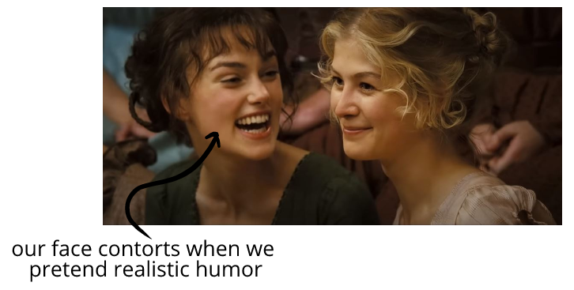

Spectator humor profiles are shaped by physical limitations
If a movie wants a clear shot of a face, the director will instruct the actor not to put their hands near their heads when pretending to laugh. This prevents a common humor tell from being represented in many movies.
When we laugh in conversation, the laughter may take up 25% of the conversation—but for pacing reasons, movies don't want laughter to take up 25% of a scene! This shapes how actors, screenwriters, directors, and editors portray humor.
When we give genuine smiles, our skin crinkles, our lips rise toward our nose, our nose moves, our eyes change shape, dimples form, and so on:
Some movies rarely let actors or characters
In a
Similarly, we may find the smile below to be appealing
We can try making this tight smile with eyes wide open in a mirror—and then imagine how people would react to us smiling at them like this!
That's because what we enjoy is often inverted between spectator entertainment and real life. A smirk is fun in a movie
Consider:
This is obvious when we take pictures that are successful on social media or for business websites. What's an appealing photo for others to
But because we're spectator-oriented, we prioritize how the
These are examples of how constraints and goals lead to a distinctive "movie" humor profile.
If we think movies are "supposed" to be emotionally realistic, we can invent a goalpost for criticism—or else draw off-base conclusions about how people behave.
That's okay, because
As movies, they are engaging their audience—and aren't straightforward mirrors of life.